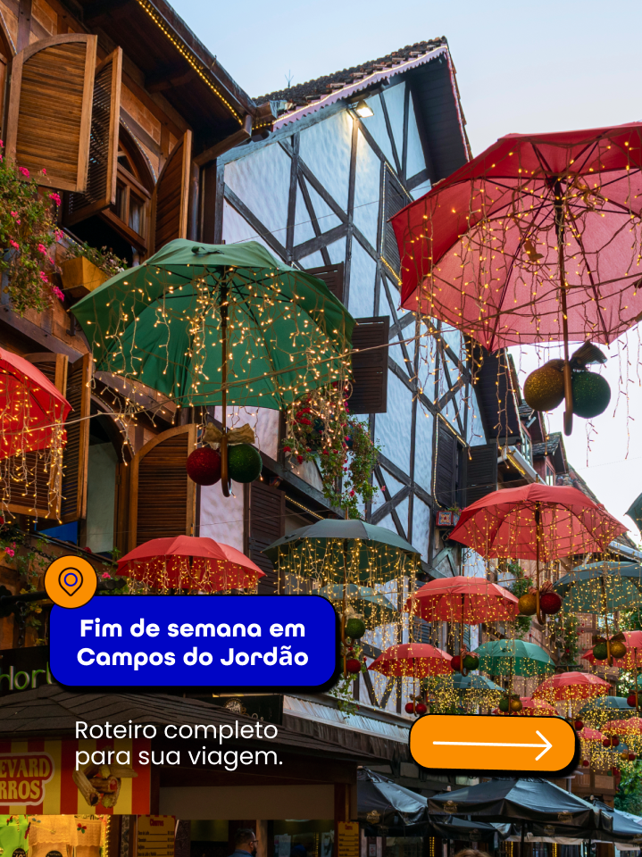

<!doctype html><html lang="pt-BR"><meta charset="utf-8"><link rel="stylesheet" href="../../skills/qp-brandbook/assets/fonts.css"><style>*{box-sizing:border-box}body{margin:0;background:#dfe5ed;font-family:Inter}header{padding:20px;max-width:960px;margin:auto;font-size:14px;line-height:1.6}.art{position:relative;overflow:hidden;width:720px;height:960px;margin:auto;background:#0d2240}.band{position:absolute;padding:16px 22px;border-radius:8px 28px 8px 15px}img{display:block}[data-check]{font-synthesis:none}</style><header>Estudo de validação · rodon-foto-baloes · Não é template oficial.<br>Novos balões sobre região fotográfica do preview original, recortada para excluir a chamada antiga. Nunito 800 + Poppins; contorno e sombra gráfica curta. Não é original de fotografia para ampliar.</header><main class="art"><div class="band" style="left:48px;top:55px;background:#FB8E00;color:#140b08;border:2px solid #140b08;font:400 25px Poppins;transform:rotate(-3deg)">Seu próximo destino?</div><div class="band" data-check style="left:44px;top:130px;background:#0005c5;color:white;border:2px solid #140b08;box-shadow:5px 7px 0 #140b08;font:800 39px/1.08 Nunito;transform:rotate(1deg)">Bora conhecer<br>novos caminhos.</div><div class="band" data-check style="left:45px;bottom:95px;width:535px;background:#f3ede4;color:#140b08;border:2px solid #140b08;box-shadow:4px 5px 0 #140b08;font:400 26px/1.3 Poppins">Um convite para olhar<br>o Brasil de outro jeito.</div></main></html>